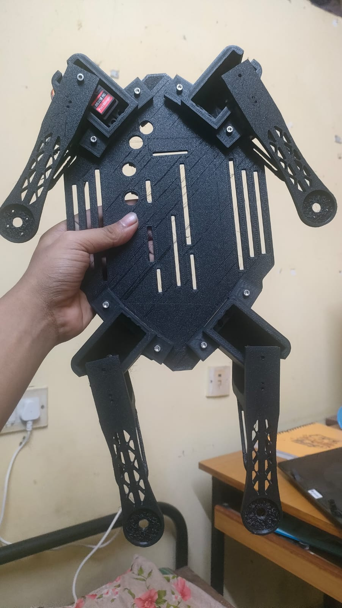
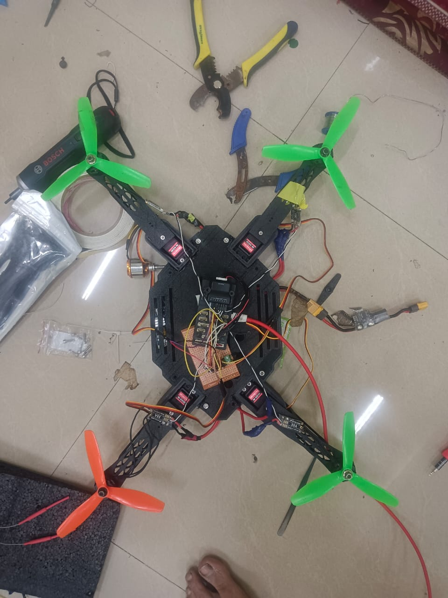
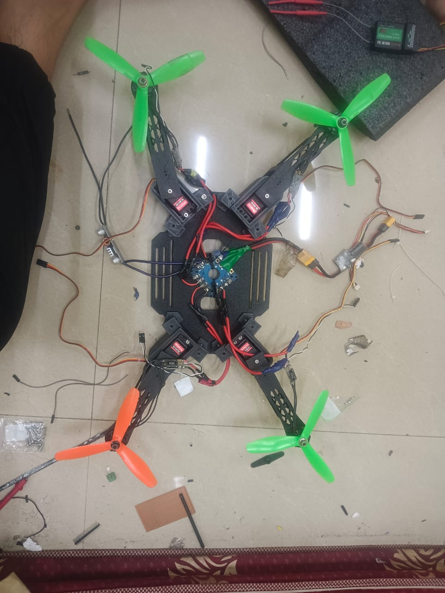

Adaptive Morphology for Quadrotor
Research Context: This is my current BTP at IIT Kharagpur on a quadrotor whose arm geometry can change during operation instead of remaining fixed throughout a mission.
My Work: I shaped the concept, built the simulation models, adapted the mixer and control logic, and pushed the work toward a physical prototype.
Current Status: The project has already produced stable simulated behavior across multiple configurations and an initial hardware direction, with the full technical flow available below.
Open Full BTP Technical Details
Problem Framing
The central question in this BTP is how to make a quadrotor remain controllable while its physical geometry changes. A conventional quadrotor is designed around a fixed frame, fixed arm lengths, and a fixed thrust allocation structure. In this project, the geometry itself becomes a variable, which means the controller and overall system architecture have to adapt along with the vehicle.
I am studying this through a reconfigurable quadrotor that can transition across multiple arm layouts, including X, T, and O-like configurations. The aim is to understand how morphology changes affect stability, actuation, control authority, and mission use.
What I Have Done
- Defined the project as a complete aerial robotics system rather than only a CAD or control exercise.
- Built the morphology concept through repeated mechanical design iterations and component-level modeling.
- Created simulation-ready geometry and vehicle descriptions so the platform could be evaluated before hardware locking.
- Integrated the platform into Gazebo and PX4 SITL workflows to study behavior under changing arm geometry.
- Worked on the control allocation side so total thrust and body torques could still be meaningfully distributed as the frame changed.
- Tested different configurations in simulation and tracked whether stable hovering could be maintained across transitions.
- Moved the work toward hardware through an initial prototype and an electronics-level integration view.
CAD Design
The project began with CAD-level iteration on the frame, arm elements, and structural parts required for a reconfigurable quadrotor. This stage helped me reason about how the geometry could physically change before moving into simulation and control adaptation.
SDF Model Creation for Gazebo
After the CAD stage, I converted the design into simulation-oriented models for Gazebo. These figures represent the vehicle model creation stage that connected the geometry work to the simulated platform used for hover and morphology testing.
Control and Logic
The logic of the project is that changing morphology also changes the actuation geometry. That means the mapping between desired forces and motor commands cannot remain identical to the rigid-frame case. My work therefore focused on making the controller aware of the changing arm arrangement instead of assuming a constant mixer.
In practice, this meant studying how the force and moment contributions of each motor vary with arm angle, and then embedding that into the control pipeline so the vehicle can still hold attitude and altitude during different configurations. The project combines geometry reasoning, allocation logic, and simulation validation in one loop.
Mixer Allocation Matrix: The mixer maps collective thrust and total body torques to the individual motor thrusts as a function of arm angles and geometry.
Different Morphology Configurations
These simulation images correspond to the four morphology configurations used in the study. The order is default configuration first, followed by X, T, and O.
Hardware Prototype
The project has also moved toward physical realization. These figures show the early hardware prototype, newer hardware assembly progress, and the system integration direction for the adaptive morphology platform.


